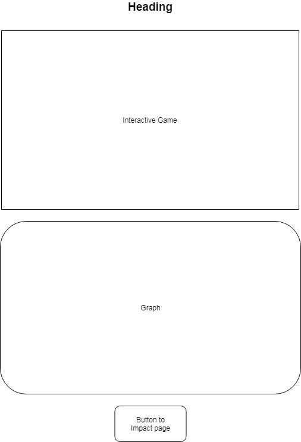
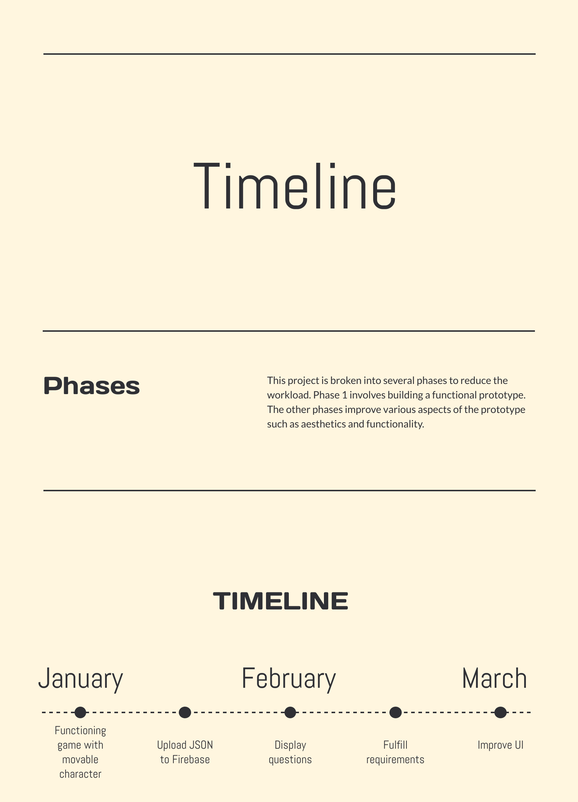

Roguelike Games
Roguelike games refer to a subgenre of RPGs (role-playing games) in which the player ventures through procedurally generated levels, usually in the form of a dungeon. Famous roguelike games include UnReal World and Enter the Gungeon. Roguelike games are relatively easy to program and originally were made on systems with low memory and have been around since the 1990s. As a case study, I played my copy of Enter the Gungeon on the Nintendo Switch. The game allows the player to control the main character and defeat a variety of enemies in each room. When the player defeats all of the enemies in a given room, access to the next room is unlocked. In this way, each new room is procedurally generated. I found that playing the roguelike format was a very enjoyable experience and captured my attention.
The Quiz
The use of a quiz to educate people is nothing new. Popular quiz games include Quizup and Kahoot among their ranks.By randomising the questions, a quiz project can allow people to obtain a grasp of the scale of the climate crisis. However, a quiz project alone is not very exciting or interesting to the user. To combat this, I decided to build the quiz in the style of a roguelike game to capture the attention of the user. I installed the application Quizup to investigate the concept of a quiz game. Quizup is a game that gives the player randomised questions, which they must answer faster than their opponent. The questions are delivered in the form of a 4-option multiple choice format. This reduces the risk of the user getting caught up in indecision. The quiz provides an effective medium for a trial-and-error playing style - the user is not informed of the correct answer beforehand, nor is the user expected to know the correct answer.
Wireframe of Website
What is Climate Change?
Climate change is the change in climate caused by the greenhouse effect. When we put gases such as carbon dioxide, methane and nitrous oxide into the atmosphere, it prevents the heat of the sun from leaving the Earth, causing the Earth to heat up. The purpose of this project was to educate the user on exactly which countries were most responsible for global warming over the years. Usually the answer is not obvious - for example, Syria is a major producer of greenhouse gases. The world at the moment is balanced precariously between survival and apocalypse - and it is crucial to inform people about the perpatrator countries to hold the guilty responsible for their actions.
Choice of Project / Targeted User
A quiz allows the user to interpret the data themselves - they may not necessarily be correct, but should the user give the wrong answer, there will be a graphic indicating the correct answer. This is facilitated using a multiple-choice format. The quiz itself, of course, provides the interactive element. Thus, the roguelike quiz successfully fulfils all tasks set out in the brief. The quiz caters to users of all ages. Specifically, however, it caters to those under the age of 18, who disproportionately play more games than people of other ages.
Development Model
I chose the Spiral Model for my project. The Spiral Model has conventionally been used with small development teams working on specific tasks, however this
can be weaved into my project as my project is a fully scalable idea. The model is very well suited towards projects that require constant redrafting, such as this one -
and as such it helps me reduce the risk that the overall statistics may be impacted by a lack of precision in one of the smaller datasets.
Choice of Architecture
I have opted to use .CSV files for datasets, because they are the easiest to work with. I am using Python to process and organise the data as the Pandas module is particularly useful when dealing with CSV files. Python is particularly good for programs involving data analysis. Python organises the data into nested dictionaries to write it easily to JSON files. I required a highly organised structure within Firebase, so I used JSON to organise the data, then I imported the JSON file into Firebase. I used the Firebase CDN to get Firebase to work with Javascript. I chose Javascript and HTML to create my artefact site, because they are the most commonly used languages.
Timeline
This is the timeline for the project.
